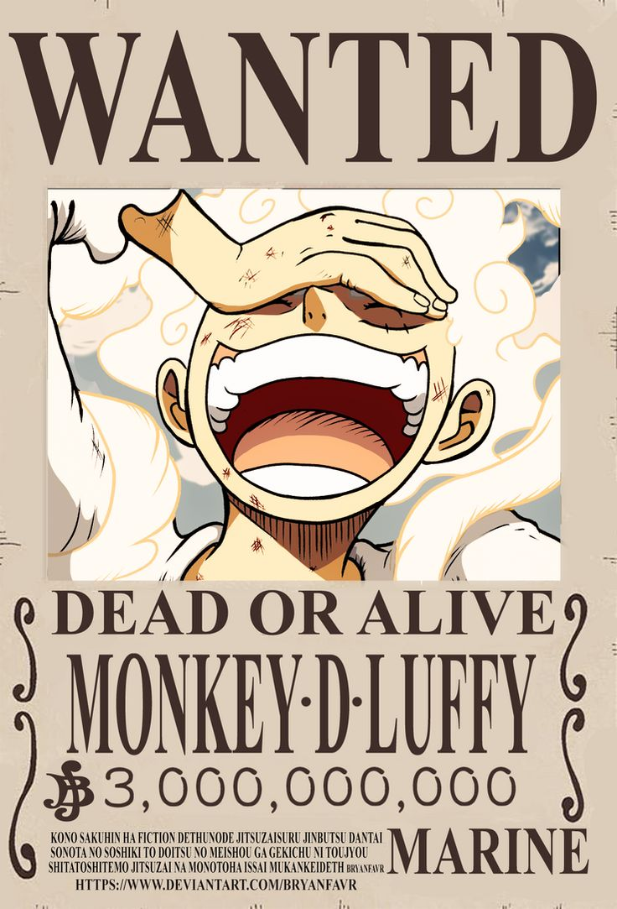

🏴☠️ O mundo de One Piece
One Piece é uma obra criada por Eiichiro Oda que acompanha Monkey D. Luffy e sua tripulação em uma grande aventura pelos mares.
O objetivo de Luffy é encontrar o lendário tesouro conhecido como One Piece e se tornar o Rei dos Piratas.
🌊 Explore o site
🔥 Luffy
